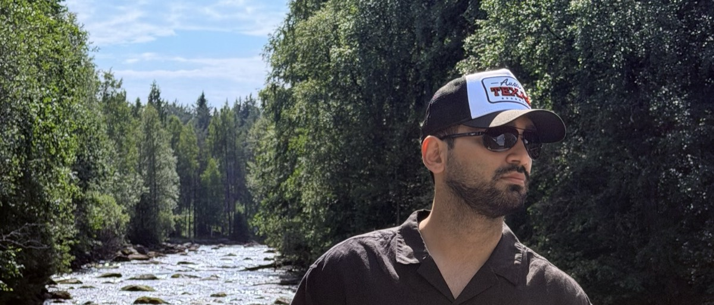

Ship safely
Gated Terraform pipelines in Jenkins — auto-apply in DEV, manual approval into production, every plan read against the ticket before it lands. Releases stop being events.
DEVOPS · CLOUD · API PLATFORMS
Arash Ziaee · DevOps Engineer
I build the pipelines, gateways, and guardrails that let teams ship without holding their breath.
Italy → Sweden EU long-term resident · No work permit required
Tap a package to explore. Swipe sideways to orbit; vertically to scroll. Keyboard: arrows to orbit, 1–3 to select, Escape to reset.
A schematic of how I work, not a live production system.
Approach
I keep production APIs boring. Seven years building the pipelines, gateways, and guardrails that let teams ship without holding their breath — and lately, the AI tooling that holds itself to the same standard.
Italy · Relocating to Sweden · EU long-term resident, no work permit required
Gated Terraform pipelines in Jenkins — auto-apply in DEV, manual approval into production, every plan read against the ticket before it lands. Releases stop being events.
Apigee X proxies across a 30-bundle platform serving 2.3M+ members and 350+ stores. One proxy serving both enterprise and consumer callers, so nobody had to build a second backend.
Correlation IDs, cloud logs, execution plans. Traced an intermittent 504 to a slow backend query; cut a failure-detection window from 30 minutes to 15 for reports ten business teams depended on.
Experience
Two companies, five roles, newest first. Open a company to see its roles, and a role to see what it involved.
Nov 2022 — Present · Italy
Coop Alleanza 3.0
Dec 2019 — Oct 2022
Open a package to explore my roles. Select a role for the full story.
now
a report failsa person knows
10+ client applications on Azure
Scripted CI pipelinesbuild checks before a deploy
5+ client web platforms
2019
University of Science and Technology · Sep 2025
University of Florence · Sep 2023
Side Projects
Most people treat an assistant as a chat window. I treat it as an unprivileged process that needs a contract, a permission model, and an audit trail.
One bootstrap policy every agent reads first. Two different agents across three machines behave identically; agent-specific rules stay in agent-specific files, so nothing that must hold everywhere gets lost by switching tools.
No agent writes without explicit confirmation. Search first, prefer update over create, stop on ambiguity. A wrong write is an incident, not a typo.
Commit and push hooks scan for exposed secrets before anything leaves the machine. Session hooks log every AI-initiated mutation. Known gaps are documented, not hidden.
Private configuration is encrypted in-repo and resolved through tokens. The key lives outside the repository and is granted to no agent.
Packaged agent skills that audit CI/CD, containers, Kubernetes, and Terraform against a fixed standard — the same review every time.
Nothing runs on a schedule. Every flow is started by a person. Full autonomy was the easy option and the wrong one for writes that are hard to unwind.
Every phase ships as a reviewed pull request, never a push to main.
Toolkit

Beyond Work
The one part of the day with no backlog and no dependencies. You either lifted it or you didn't.
Usually something in my ears. Tech, but not only tech — the good ones are the ones that argue with me.
No destination required. A surprising number of problems get solved a long way from the keyboard.
No single genre survives contact with my playlist. It changes with the task and with the hour.
Playing long enough to have opinions about it. Less time for it now, but the back catalogue still wins.
Persian, English, Italian — and Swedish next. Switching between them all day is why I write documentation the way I do: short sentences, one idea each.
Contact
EU long-term resident. No work permit required.
Connect on LinkedIn ›